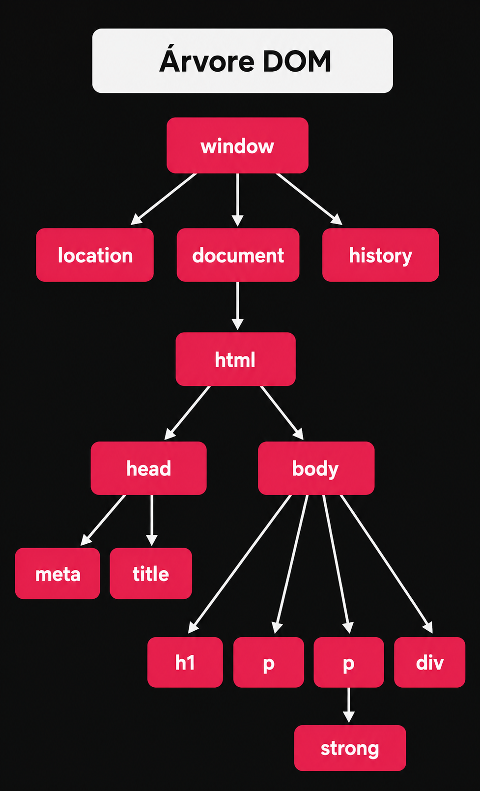
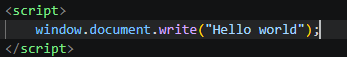
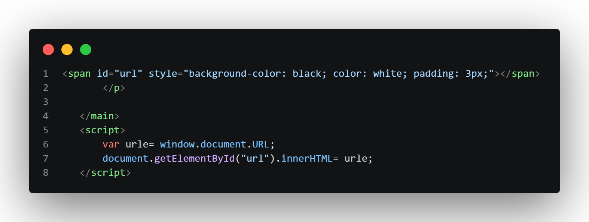

DOM - Document Object Model
Para entendermos o que é DOM, primeiro vamos imaginar uma casa 🏠
o HTML é a estrutura da casa
o CSS é a pintura e decoração
o Js é a pessoa que entra nessa casa e pode mudar tudo de lugar
com isso em mente, observe o seguinte, a pessoa ao olhar a porta identifica que ela é uma porta, ao olhar a janela, identifica que ela é uma janela, isso é o DOM
DOM basicamente é o Js identificando os objetos da pagina e pronto para modificar se necessário
Árvore DOM
o Js não olha a pagina web como nós.
Por exemplo: nós vemos o titulo "Hello world" e depois o paragrafo "Eu disse olá mundo" e depois o botão "Clique aqui".
o Js vê da seguinte forma: h1 ➡ p ➡ button
assim ele identifica os objetos da pagina e pode interagir com eles e isso é a arvore HTML.
é a identificação do HTML.
Hierarquia DOM
com base na arvore DOM, há uma Hierarquiaa ser seguida, veja bem: primeiro temos a janela, ou seja, o navegador aberto, no navegador temos o documento, historico e localização, o documento é a pagina web que acessamos, na pagina web temos o html, que é a linguagem usada, em html tem o head e body, no head vem o meta e title, no body o h1, p, div, no p tem o strong, e assim vai a formatação html.
é necessário saber disso pois é ai que usaremos comandos para trabalhar com DOM. essa arvore em design ficaria assim:

agora com essa arvore em mente podemos modificar a pagina usando DOM, observe como fica o codigo:

esse codigo acessa a janela(window), o documento(document), e escreve "Hello world"
outro exemplo é pedir para buscar uma informação sobre a pagina.
no codigo usado será criado uma variavel e pedir pra colocar a url dentro do span a baixo:

neste codigo eu crio uma variavel url, e busco a url do site com o comando window.document.URL; após isso coloco ele no span definido com o id url. eu uso o comando document.getElementById("url)para achar na pagina o id url e adiciono nele a variavel url
este é um exemplo de modificação na pagina usando DOM
Navegação de DOM
podemos acessar o DOM da pagina por marca, ID, nome, classe ou seletor(que é um recurso mais recente)
então a partir de agora aprenderemos como selecionar cada modelo de DOM
por Marca
o comando utilizado é getElementByTagName()
o que seria a tag name? neste comando poderiamos usar o body, p, h1, h2, etc...
ou seja, as tags usadas na pagina, mas deve se prestar atenção, pois se usarmos uma tag repetida na pagina, modificamos todas as tags da pagina, por exemplo, a pagina é cheia de paragrafo (p), se usar o TagName(p), modifica todos os paragrafos, sedo assim, devemos tomar cuidado qdo for usar.
Mas podemos cotornar essa situação, como toda linguagem de programação, o Js tambem reconhece cada tag em especifico, e faz isso da seguinte forma;
imagine uma pagina com 5 paragrafos: p ➡ p ➡ p ➡ p ➡ p
o Js reconhece assim: p[0] ➡ p[1] ➡ p[2] ➡ p[3] ➡ p[4] (lembrando que a contagem sempre começa do 0)
com isso podemos buscar somente o paragrafo que queremos, por exemplo, queremos modificar apenas o primeiro paragrafo da pagina, faremos assim:
document.getElementsByTagName('p')[0]
outras seleções
entendido o por tag name, somente devemos aplicar o conceito nos outros modos de seleção.
document.getElementById('id') = id='id'
document.getElementByName('name') = name= 'name'
document.getElementByClassName('class') = class= 'class'
querySelector
o querySelector reconhece o elemento igual o CSS, # para ID, . para classe, "" para tag
ficaria assim: document.querySelector("#id") para selecionar um id.
oi